Vertical Ground Heat Exchanger sizing with GLHEPro
This tutorial explains how to size a vertical ground heat exchanger with OpenStudio and an external program called GLHEPro. First, you make a model with water-to-water heat pumps and use district heating and district cooling objects to determine the loads on the heat-pump loop. You run this model and use a Measure to export these loads in a format that GLHEPro will accept. Then you run GLHEPro and use another Measure to bring the G-Function from GLHEPro back into your model, replacing the district heating and district cooling objects on the loop.
Setting up the initial model
-
Create a model with water-source heat pumps (WSHPs) in each zone you want to condition. WSHPs are Zone HVAC Equipment found on the ThermalZones tab.
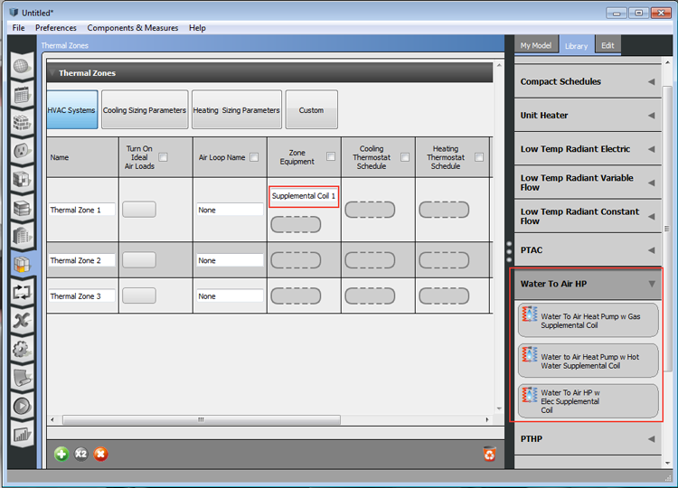
-
Create a plant loop with a pump, a district heating plant and a district cooling plant on one branch, and a bypass pipe on a separate branch. This loop will be the heat source/heat sink for the WSHPs.
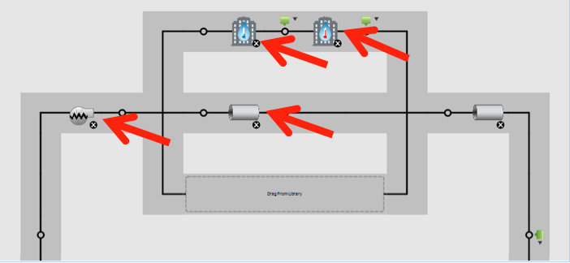
-
Set up the heating and cooling setpoint for the Heat Pump Loop. The district heating and cooling objects will run to keep the water in the heat pump loop between these bounds. The loads on the district heating and district cooling objects will represent the capacity needed in the GSHX.
- Put a SetpointManager:Scheduled onto the outlet of the district cooling object. Edit the temperature schedule of that setpoint manager to be the desired max temperature of the GSHX water (95F, for example). Make sure to edit both the default days and the design day schedules.
- Put a SetpointManager:Scheduled onto the outlet of the district heating object. Edit the temperature schedule of that setpoint manager to be the desired min temperature of the GSHX water (55F, for example). Make sure to edit both the default days and the design day schedules.
- Put a SetpointManager:Scheduled onto the supply outlet node of the loop. Edit the temperature schedule of that setpoint manager to be the desired max temperature of the GSHX water (95F, for example). You can pick the same schedule used for the district cooling object's setpoint manager.
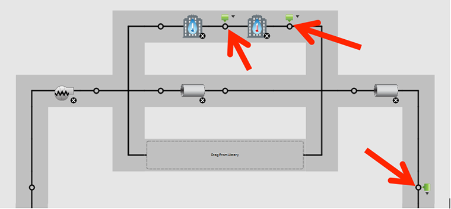
-
Set the sizing parameters of the Heat Pump Loop
- The loop type should be "Condenser."
- The loop design outlet temp should be the desired max of the GSHX water (95F here).
- The loop design temperature difference should be reasonable for a GSHX (9 delta-F here).
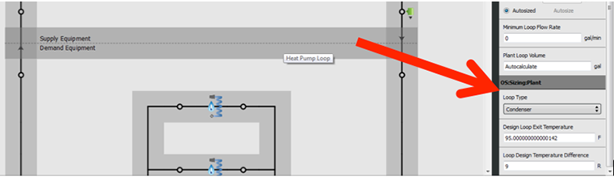
-
Connect the heating and cooling coils for each WSHP to the Heat Pump Loop.
- Click on the Thermal Zones tab
- Click on the WSHP
- Click the chain link icons in the upper right
- Check the box to select the Heat Pump Loop.
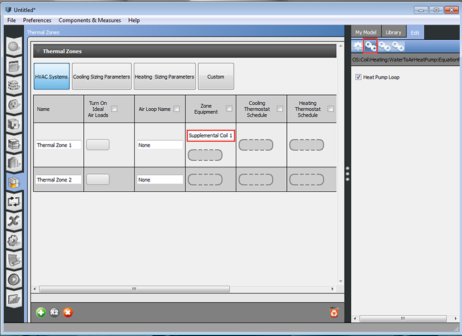
Adding Measure to export loads for GLHEPro
-
On the Measures tab, click "Find Measures on BCL"
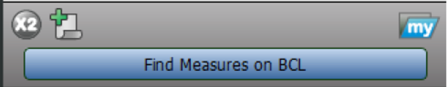
-
Search for "GLHEPro"
- Download the following 3 Measures:
- "GLHEPro Setup Export Loads for Ground Heat Exchanger Sizing"
- "GLHEPro Export Loads for Ground Heat Exchanger Sizing"
- "GLHEProGFunctionImport"
- On the Measures tab, drag 2 of the 3 Measures into the model:
- "GLHEPro Setup Export Loads for Ground Heat Exchanger Sizing" as OS Measure
-
"GLHEPro Export Loads for Ground Heat Exchanger Sizing" as Reporting Measure
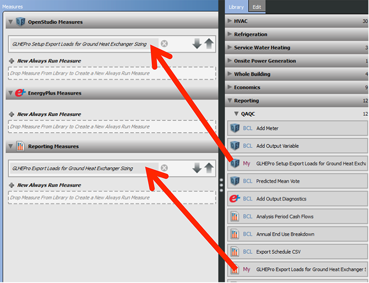
Run the simulation and import loads into GLHEPro
- Go to the Run tab > Run > wait for simulation to finish
-
Go to the Results tab and select the report called "Export Loads to GLHEPro" in the dropdown
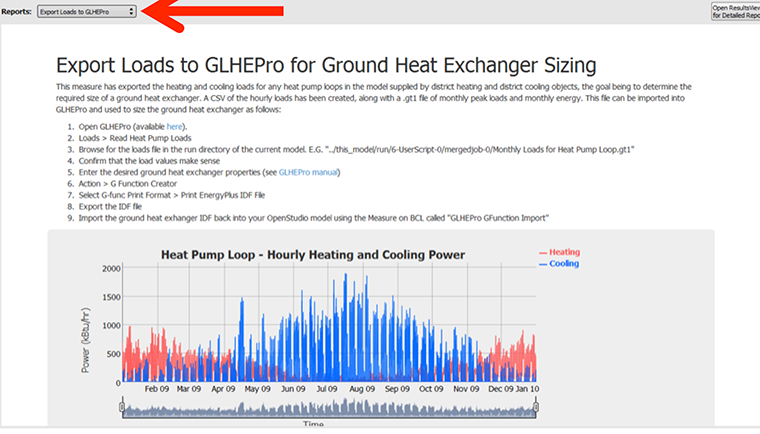
This report explains the next steps for importing the loads into GLHEPro. It also shows the hourly load for the district heating and district cooling objects. Important Note: the hourly graph only shows up if you are using OpenStudio 1.4.1 or higher (or if you are using OpenStudio 1.4.0 built with Ruby 2.0). Even if the hourly graph doesn't show up, the loads have still been exported for GLHEPro, you just don't get to visualize them.
-
Find the GLHEPro .gt1 file. In a file browser, navigate to the run directory for your model, for example:
C:\GLHEPro\gshp_model\run\6-UserScript-0\mergedjob-0You should see the files below:
- The *.gt1 files are the monthly loads for GLHEPro import.
- The *.csv files are the hourly loads (same as seen in graph).
- The report.html is the same report seen in the OS Application.
-
Open GLHEPro, which can be downloaded (not free) from here: http://www.hvac.okstate.edu/glhepro/
- In the top menu, click Loads > Read Heat Pump Loads and select the "Monthly Loads.gt1" file.
-
Double-check that these numbers make sense, then click OK.
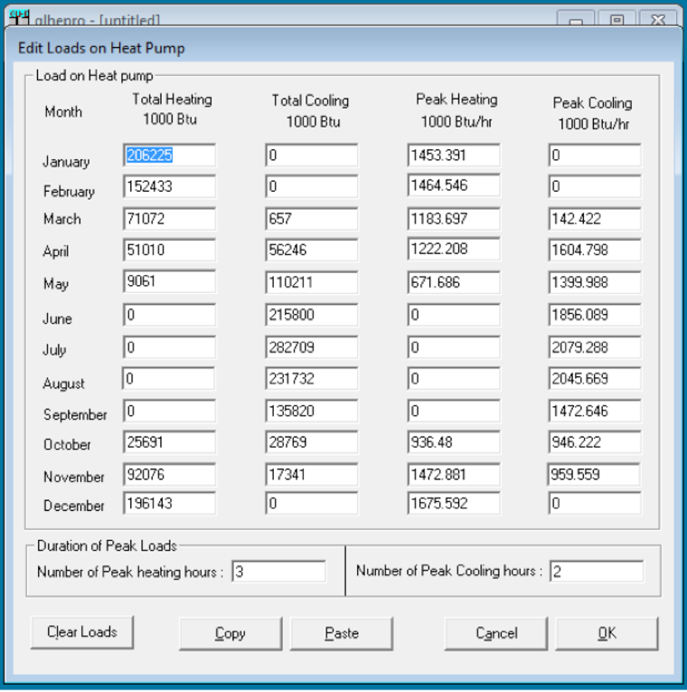
Run GLHEPro to size bore field
- Fill in the GLHEPro inputs. See GLHEPro manual for more information.
- In the top menu, click Action > Perform Sizing to size the loop.
- In the top menu, click Action > G Function Creator.
-
Fill out the inputs as desired, then click "Select G-func Print Format" and check "Print EnergyPlus IDF File.
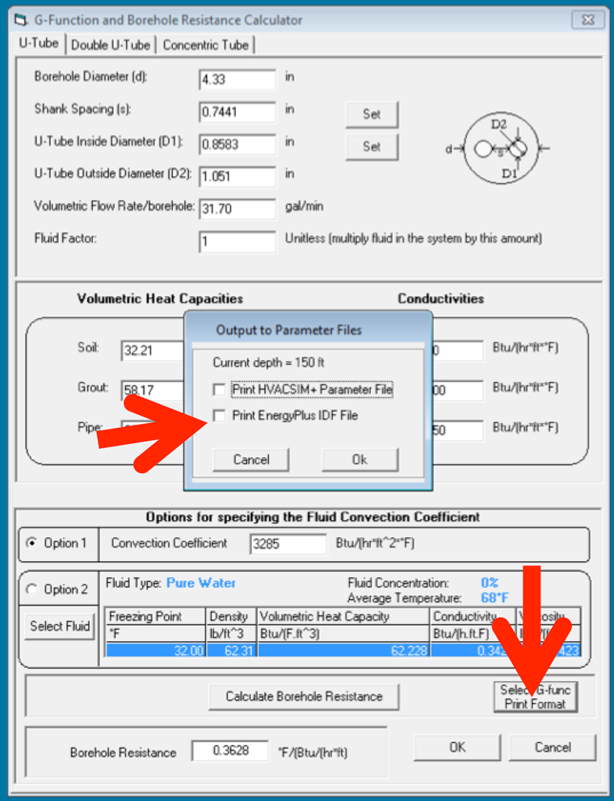
-
Select a place on your computer and save the IDF file.
Import bore field sizing information and G Function into OpenStudio
- Return to your OpenStudio model.
- Save a copy in case you want to change loads and re-size GSHX later.
- In the top menu, click Components & Measures > Apply Measure Now
- Under HVAC > Whole System, find "GLHEPro GFunction Import"
-
Click this Measure and fill in the inputs: path to GFunction.IDF, heat pump loop.
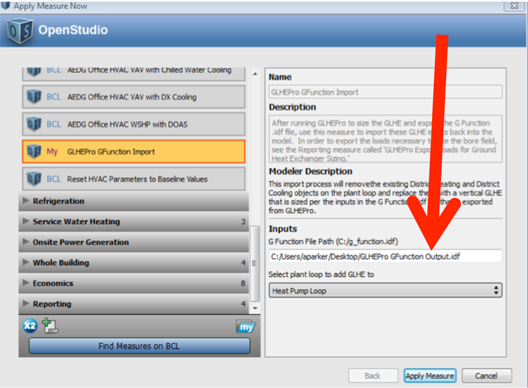
-
Click Apply Measure. You should see information about district heating and district cooling objects being removed from the heat pump loop, and information about a GLHX being added. If so, click Accept Changes.
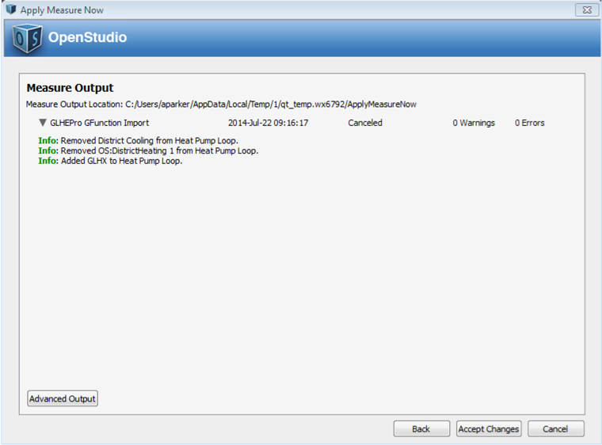
-
On the HVAC tab, inspect the changes. You should see a GSHX in place of the district heating and district cooling objects.
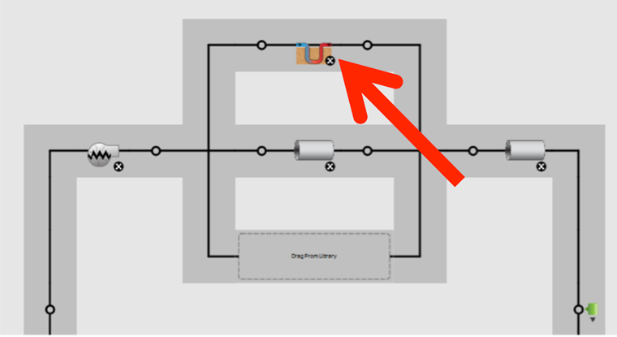
-
Re-run your simulation. If you get lots of warnings/errors about the plant loop temperatures being too cold or too hot, your bore field wasn't sized correctly. Go back into GLHEPro, correct any mistakes, then try again. Also, if you changed your loads significantly, you'll need to re-run the model with district heating and district cooling and repeat the GLHEPro process.